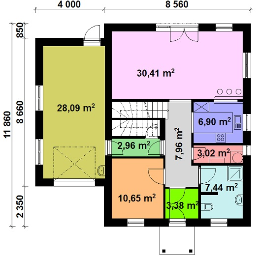
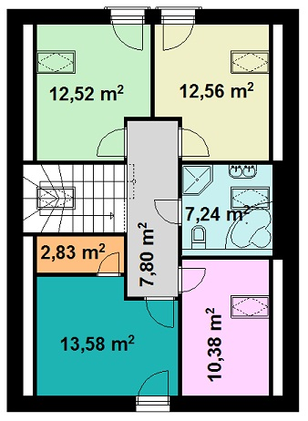

KLASIK 136 6+kk
 Počet podlaží: 2
Počet podlaží: 2
Dispozice: 6+kk
Zastavěná plocha: 136m2
Stavba na klíč: od 2.690.000,- bez DPH
Hrubá stavba: od 1.400.000,- bez DPH
Ceny uvedené pro základní vybavenost
Dům je střední rozměrové kategorie a je vhodný pro pěti až šesti člennou rodinu, za velmi příjemnou cenu. Projekt možno vzrcadlit popřípadě jakkoliv upravit.

Základní vybavenost:
Soupis dodaných prací včetně materiálů obsažených v ceně díla v základní vybavenosti
Varianta YTONG – HELUZ + dodatečné zateplení
Příprava staveniště:
- příprava staveniště nutná pro realizaci
- zemní práce nutné před realizací stavby
- vytyčení stavby dle PD
- usazení na pozemek dle PD
Základy a základová deska:
- vyhloubení a vylití základových pásů včetně realizace potřebných průchodek dle PD
- vyzdění a vybetonování ztraceného bednění nad úrovní základových pásů - výšky dle PD
- vlastní betony základové desky včetně ležatých rozvodů kanalizace a vyústění průchodek
- Hydro izolace lepenkou – max. STŘEDNÍ RADONOVÉ RIZIKO
Svislé konstrukce:
- Vyzdění veškerého nosného zdiva
Varianta HELUZ:
HELUZ PLUS 30 tl.300mm NA CELOPLOŠNÉ LEPILO včetně systémových . překladů + dodatečné zateplení viz úprava vnějších zdí
Vyzdění vnitřních příček: HELUZ 11,5 na lepidlo včetně nenosných překladů
Varianta YTONG:
YTONG P2-400 tl.300mm NA CELOPLOŠNÉ LEPILO včetně systémových . překladů + dodatečné zateplení viz úprava vnějších zdí
Vyzdění vnitřních příček: YTONG tl.100 na lepidlo včetně nenosných překladů
Vyhotovení železobetonového obvodového věnce nad nosným zdivem ve 2NP, sloužící taktéž pro ukotvení střešní KCE
Vodorovné konstrukce:
Strop 1.NP: předpjaté dutinové panely dle PD včetně žel.bet. obvodového věnce
Schodiště: zavřená zavěšená žel. bet. konstrukce se zaklopením linoleem včetně schodištních lišt
Zastřešení stavby:
Krovy: klasické krovy s hoblovanými přesahy pobitými palubkami shora natřenými bezbarvým lakem
Tašky: KM-BETA klasik včetně všech potřebných doplňků – ČERVENÁ, ČERNÁ A HNĚDÁ BARVA BARVA
Okapy, svody a oplechování: Pobarvený plech okapní svody budou zakončeny nad úrovní rostlého terénu
Hromosvod: dle elektro projektu
Zdravotechnika:
Voda: rozvody podlahách a zdech přivedené na místo připojení zařizovacích předmětů dle PD a zaslepeny. Hlavní přívod vody k vodoměrné šachtě do 10m.
Výroba teplé užitkové vody zabezpečí bojler 160 l.
Kanalizace: rozvody podlahách a zdech přivedené na místo připojení zařizovacích předmětů a zaslepeny. Hlavní přívod kanalizace k revizní kanalizační šachtě do 10m.
Zařizovací předměty zdravotechniky:
2 x standardní WC kombi v ceně včetně ovládacího zařízení do 2.500,- /kus včetně DPH
2 x umyvadlo včetně baterie v ceně do 2.500,- /kus včetně DPH
1 x sprchový kout stavebnice s vlastní baterií v celkové ceně do 8.000,- /kus včetně DPH
1 x vana včetně baterie v ceně do 6.500,- /kus včetně DPH
Ústřední topení:
Zdrojem tepelné energie bude elektrokotel dle PD. Vlastní vytápění bude zabezpečeno celoplošným podlahovým vytápěním bez systémových desek – kotvení do podlahového polystyrénu na skoby. Mechanický pákový rozdělovač okruhů v systémové skříni.
Elektroinstalace:
Veškeré rozvody kabeláže ve zdech a podlahách pro zásuvky, osvětlení, varnou desku, taktéž pro 1 x vnější zásuvku na 220V a 380V. V místě zásuvek a vypínačů krabice s kabeláží připravené pro jejich instalaci. V místě světel kabeláž ze stropu připravená pro napojení daného osvětlení. V místě připojení varné desky krabice s kabeláží pro připojení. V místě Bojleru krabice s kabeláží pro připojení. Vnitřní domovní rozvaděč s potřebnými jističi dle PD. Přivedení silového kabelu k vnějšímu rozvaděči RM do 10m. Osazení vypínačů a zásuvek modelu KLASIK výrobce ABB standard bílé barvy. Vlastní osvětlovací zařízení (lustry, svítidla, bodovky atd.) nejsou součástí dodávky. Počty zásuvek a světel jsou počítány dle PD v nižším standardu.
Součástí dodávky nejsou nízkonapěťové, televizní a datové rozvody.
- kanalizační rozvody, rozvody TUV + SUV a elektro související s kuchyňskou linkou budou rozvedeny do předpokládaného místa připojení a zaslepeny.
Výplně stavebních otvrů:
Vnějších:
Okna, balkónové dveře:
Dodavatel: VEKRA
Provedení: plastové 5-ti komorová profil PRIMA
Barevnost: vnější a vnitřní barva bílá stejná barevnost vnějších plechových a vnitřních plastových parapetů
Zasklení: trojsklo bez okrasných vnitřních příček
Vchodové dveře:
Stejného systému jako okna s kováním vchodových dveří v patřičném profilu, výplň Izolační trojsklo popřípadě hladká deska
Střešní okna: ROTO, VELUX základní
Garážová vrata: pokud je součástí stavby garáž – rolovací s el. pohonem na dálkové ovládání bílé do 26.000,- bez DPH/kus/stavební otvor
Vnitřních:
Vnitřní dveře s obložkami:
SAPELI STANDARD Model 10, 30, 40, 50, 60 a 65
Vybavení: Standardní bezpříplatkové
Sklo: dle výběru k danému tipu bezpříplatkové
Povrch dveří i obložek: fólie - bílá, dub, buk, třešeň, javor, hruška, bělený dub, olše, teak, wenge
Obložky: folie základního bezpříplatkového provedení potřebného tipu a materiálu ve vybrané barevnosti
Zámkový set a kliku: Z důvodu velkého výběru dodá investor sám, popřípadě bude řešena dodávka jako vícepráce
Finální úpravy povrchů zdí, stropů a schodiště:
Vnější zdivo:
- Pohledová boční strana základové desky obložená tepelnou izolací XPS tl.40mm ve viditelných částech natažená lepidlo + perlinka a okrasná zrnitá kamenitá fasáda
- Vnější nosné zdivo: fasádní polystyrén EPS-F 70 tl.150mm + perlina + lepidlo + fasádní akrilátová omítka bílé barvy zrnitosti 1mm (točená)
Vnitřní zdivo:
VC malta + štuk popřípadě perlina+lepidlo+štuk
Podhled stropů 1.NP:
Sádrokartón začištěný + s tepelnou izolací vatou URSA tl.260mm
Betonové mazaniny finálních podlah:
- Podkladová tepelná izolace EPS-S dle PD a vlastní betony strojem hlazené
Vnitřní vymalování:
- Bílou barvou PRIMALEX
Finální podlahy:
Koupelny (popřípadě koupelny s WC): keramická dlažba a obklad do výšky stropů v ceně do 300,-/m2 včetně DPH bez liš a listel
Samostatné WC, zádveří a technické místnosti: keramická dlažba se soklem 8cm v ceně do 300,-/m2 včetně DPH bez liš a listel
Ostatní: linoleum popř. koberce v katalogové ceně do 300,-/m2 včetně DPH
Venkovní terasy včetně jejich základů: Není součástí dodávky.
Garážové stání : Není součástí dodávky
Některé z možných víceprací:
2.) Komín HELUZ popř. SIKO s okrasnou imitací cihel nad úrovní střechy dle výběru dodavatel (bílá, červená), přívod vzduchu ve finálních podlahách k topnému mediu.
cena: 46.000,- bez DPH/kus
3.) Vnější fasáda v světlé barvě (bezpříplatkový odstín)
cena: 20.000,- bez DPH
Další možné vícepráce rádi doceníme dle vašich požadavků.